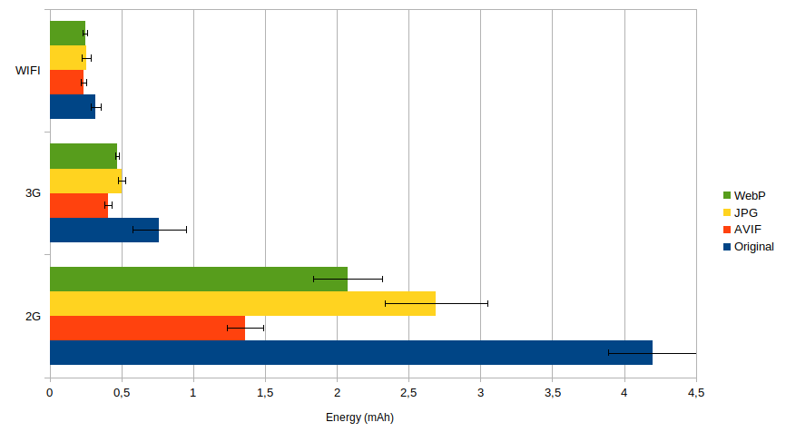
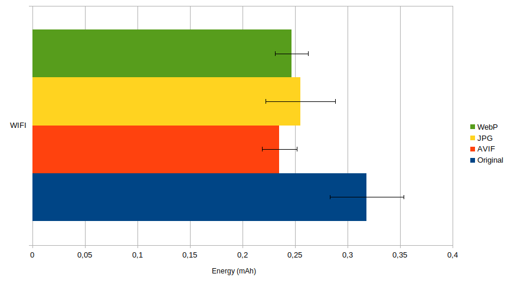
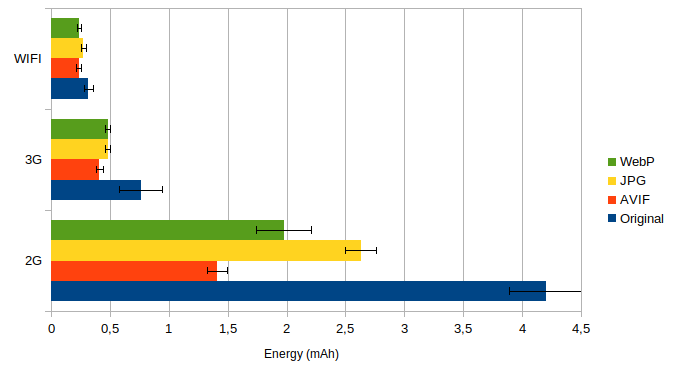
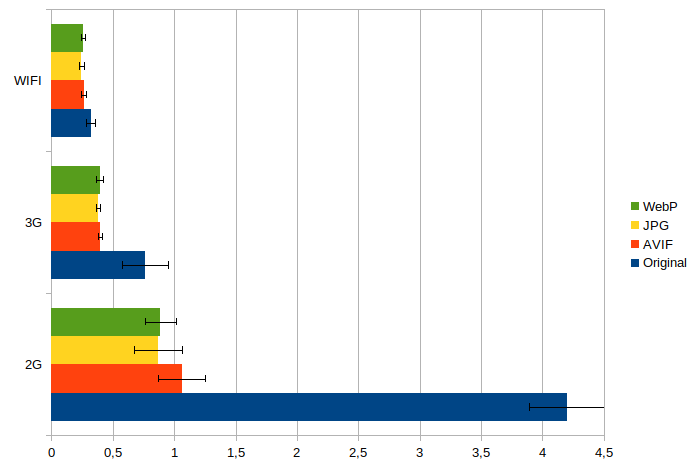
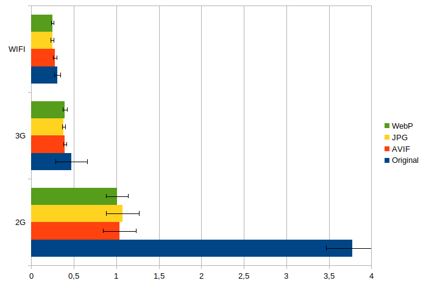
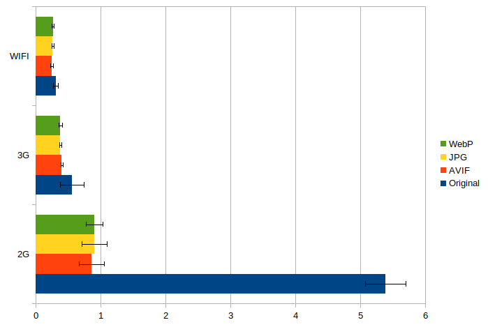
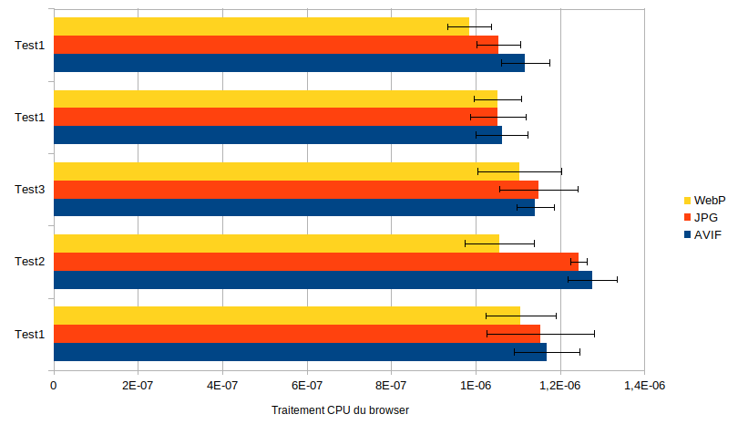
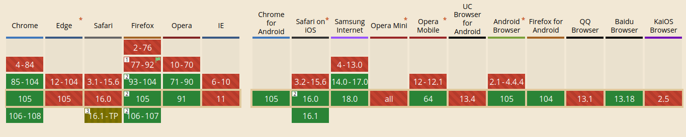
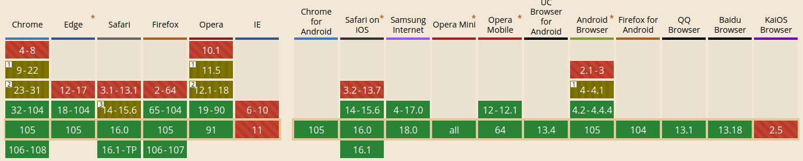

It is not easy to choose the right type of image to reduce environmental website impact. We can focus on image size or on display performance (are they two related ?). This may be the right approach. However, an energy measurement will be a more precise element if you really want to measure the actual consumption and move towards reducing the environmental impact.
in 2017 we carried out a benchmark of the new WebP format compared to JPEG and PNG. Support for Webp in browsers was beginning. In addition, AVIF, a promising image format, has arrived.
Here is an updated study.
Methodology
As a test image, we used the one proposed by Addy Osmani in an article on Smashing Magazine.
The images were generated to have the same perceived quality. Compression qualities are therefore different between formats.

- Test 1 Default quality given by Sqoosh (https://github.com/GoogleChromeLabs/squoosh/) : JPEG original (560KB), JPEG@q75 (289KB), WebP@q75 (206KB), AVIF@q30 (101KB)
- Test 2 Target quality JPEG@q70 : JPEG (323KB), WebP@q75 (214KB), AVIF@60 (117KB)
- Test3 Low quality : JPEG@q10 (35KB), WebP@q1 (35KB), AVIF@q17 (36KB)2
Image 2 : https://res.cloudinary.com/ddxwdqwkr/image/upload/v1632080886/smashing-articles/q50jpg.jpg

- Test1 : Target quality of 45k : Original (442kB), JPEG@q50 , WebP@q54, AVIF@q36
Image 3 : https://res.cloudinary.com/ddxwdqwkr/image/upload/v1632082138/smashing-articles/q10-25.jpg

- Test 1: Target quality of 25kB : Original (716KB), JPEG@q10 , WebP@q5, AVIF@q19
Measurement protocol
- We display the images one by one in a Chrome browser on a real device (Samsung Galaxy S10).
- We use Greenspector tools to measure energy consumption and other metrics (CPU, performance…).
- We perform a measurement throughout the display of the image and this 3 times to have stable measurements.
- The measurements are made under different Wifi, 3G and 2G network conditions.
Results
On image 1 for test 1, we obtain the following energy consumption measurements:

If we observe more closely the behavior in WiFi, we can better appreciate the differences in consumption with the confidence interval.

In Wifi, the consumption is relatively similar between the types of image. JPEG consume little more than other format. It is followed by WebP format and then by AVIF.
In 3G and 2G, the difference in consumption is noticeable and AVIF consumes less energy than Webp.
These behaviors are explained by the smaller file sizes in AVIF and Webp.
On image 2, the behavior is the same:

In image 3, there is almost no difference between the formats. The image is small and we find ourselves in an operation close to wifi (fast transfer):

The behavior is the same with image 2 which is at 45kB:

This is the same behavior for image 3:

It is necessary to monitor the new formats (JPEG XL, Webp2…) as well as the optimization of the algorithms because even if the gains in size are significant, the decoding processing could potentially gain even more efficiency. Indeed, here is for example the CPU processing for image 1 on test 1, where AVIF consumes more CPU than the other formats.

Recommendations:
In any case, it is necessary to compress images with lower quality, regardless of the image format. A quality >85% is useless. Energy consumption is reduced by a factor of 2 for qualities that remain high, and reduced by a factor of 6 for low qualities.
Even if the energy consumption is relatively similar between the formats, the gain provided by AVIF and Webp is much greater for less efficient connections. The choice of AVIF and Webp will be preferable because the users are not connected with broadband! In addition, the gain in terms of data exchanged will be interesting to limit the overall size of the site.
The choice between Webp and AVIF is not easy and will depend on the type of images and visitors. Additionally, Google is working on WebP version 2, and formats like JPEG XL are coming to compete with AVIF. However, considering the benefits of Webp other than the environmental impact, we recommend the use of WebP more.
For information, here is the taking into account of the AVIF format in the browsers:

As well as the Webp format:

In any case, optimize your images, compress, reduce the size and lazy-load!